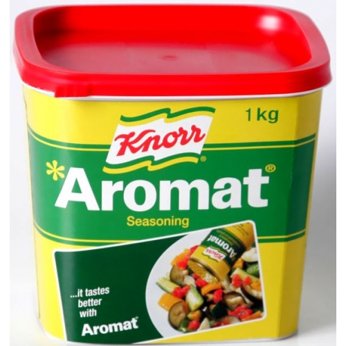

Aromat
Aromat ist eine Marke für ein Würzmittel des Herstellers Knorr, der zum Unilever-Konzern gehört.[1] Es wurde
1953 erfunden und verstärkt den „deftigen“ Geschmack zahlreicher Speisen, da es vorwiegend aus dem Geschmacksverstärker
Natriumglutamat besteht. Weitere Inhaltsstoffe sind Speisesalz und verschiedene Gewürzextrakte.
Der Hersteller Knorr bietet seit 2012 auch ein Aromatprodukt ohne Glutamat an: „Aromat natürlich ohne“, anstatt mit
Glutamat wird darin mit Hefeextrakt gewürzt, welcher aber selbst natürliches Glutamat enthält.[2]
Vergleichbare Produkte sind z.B. Fondor (Streuwürze von Maggi, seit 1954) und Mirador (von Migros) oder Vegeta
vom kroatischen Hersteller Podravka. Vom Schweizer Gastronomie-Lieferanten Hügli gibt es die Picanta Streuwürze,
der ebenfalls Schweizer Nährmittelhersteller Oswald bietet sein Aromix an, als „das Oswald-Aromat“ beworben.

Aromat kann man in folgenden sorten kaufen:
- Aromat(Dose)
- Aromat(Tüte)
- Aromat(Schachtel)
- Aromat(Muster)
Es gäbe auch noch diverse Gewürzmischungen, welche auf Aromat basieren.
Aromat
Was koche ich nur?
Die tägliche Suche nach neuen Kochideen kann ganz schön schwierig sein.
Schliesslich soll der Menüplan nicht nur abwechslungsreich und gesund sein,
sondern auch leicht und schnell zuzubereiten und der ganzen Familie schmecken.
Da ist guter Rat… gar nicht so schwer!
Denn mit Knorr lassen sich immer neue, abwechslungsreiche Gerichte zaubern.
Ganz gleich, ob für den herzhaften Mittagstisch, Zwischenmahlzeiten oder ein
feines Abendessen – Knorr gibt viele Inspirationen die das Kochen leichter machen.
Die neue Initiative von Knorr «Das koche ich heute» hilft Ihnen, täglich feine Gerichte
auf den Tisch zu bringen. Vielfältige Rezepte von beliebten Klassikern bis zu neuen
Kreationen wurden von unseren Knorr Chefköchen erprobt und liebevoll für Sie
zusammengestellt.
Lassen Sie sich inspirieren!
Zum Beispiel mit den Rezepten in dieser Rezeptbroschüre. Im Laufe des Jahres
werden Sie noch weitere Broschüren mit vielen saisonalen Rezepten in den
Verkaufsstellen finden. Für Abwechslung ist also gesorgt!
Oder finden Sie sich Ihre tägliche Inspiration ganz einfach per Mausklick. Unter
www.knorr.ch und auf Facebook können Sie sich ihren kompletten Wochenplan
nach Lieblingszutaten zusammenstellen und gleich den dazugehörigen
Einkaufszettel ausdrucken.